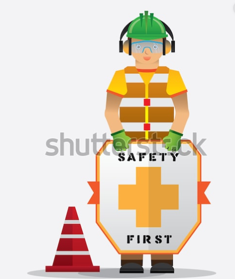

정보보안전문가는 해커의 침입과 각종 바이러스 발생에 대비해 전산망을 전문적으로 보안 및 유지합니다. 서버의 하드웨어와 소프트웨어에 대한 기술을 바탕으로 향후 일어날 수 있는 보안상 문제를 해결하고 예방합니다. 정보보안전문가가 되기 위해서는 운영체제, 데이터베이스, 시스템 관리, C언어, 네트워크 프로그래밍 등에 대한 지식이 필요하며 윤리성을 갖춰야 합니다. 